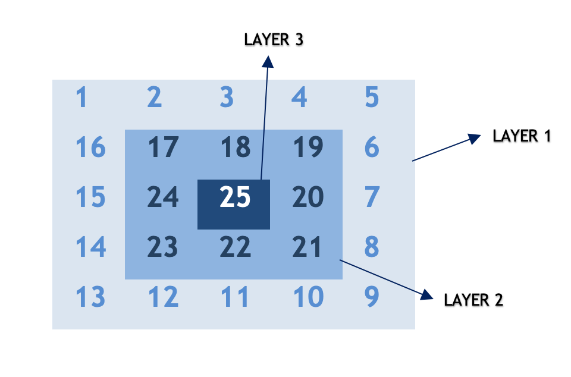

There are various problems in spiral matrix series with some variations like Spiral Matrix and Spiral Matrix III.
In order to solve such questions, the core idea is to decode the underlying pattern. This can be done by simulating the pattern and finding a generic representation that would work for any given nn. Let's discuss a few approaches.
Intuition
If we try to build a pattern for a given nn, we observe that the pattern repeats after completing one circular traversal around the matrix. Let's call this one circular traversal as layer. We start traversing from the outer layer and move towards inner layers on every iteration.

Algorithm
Let's devise an algorithm for the spiral traversal:
Example
For $$n = 3$$, $$layers = 2$$
For $$n = 6$$, total $$layers = 3$$
In every direction, either row or column remains constant and other parameter changes (increments/decrements).
Direction 1: From top left corner to top right corner.
The row remains constant as layer\text{layer} and column increments from layer\text{layer} to n−layer−1n-\text{layer}-1
Direction 2: From top right corner to the bottom right corner.
The column remains constant as n−layer−1n-layer-1 and row increments from layer+1\text{layer}+1 to n−layern-\text{layer}.
Direction 3: From bottom right corner to bottom left corner.
The row remains constant as n−layer−1n-\text{layer}-1 and column decrements from n−layer−2n-\text{layer}-2 to layer\text{layer}.
Direction 4: From bottom left corner to top left corner.
The column remains constant as layer\text{layer} and column decrements from n−layer−2n-\text{layer}-2 to layer+1\text{layer}+1.
This process repeats (n+1)/2(n+1)/2 times until all layers are traversed.
Java
class Solution {
public int[][] generateMatrix(int n) {
int[][] result = new int[n][n];
int cnt = 1;
for (int layer = 0; layer < (n + 1) / 2; layer++) {
// direction 1 - traverse from left to right
for (int ptr = layer; ptr < n - layer; ptr++) {
result[layer][ptr] = cnt++;
}
// direction 2 - traverse from top to bottom
for (int ptr = layer + 1; ptr < n - layer; ptr++) {
result[ptr][n - layer - 1] = cnt++;
}
// direction 3 - traverse from right to left
for (int ptr = layer + 1; ptr < n - layer; ptr++) {
result[n - layer - 1][n - ptr - 1] = cnt++;
}
// direction 4 - traverse from bottom to top
for (int ptr = layer + 1; ptr < n - layer - 1; ptr++) {
result[n - ptr - 1][layer] = cnt++;
}
}
return result;
}
}
C++
class Solution {
public:
vector> generateMatrix(int n) {
vector> result (n, vector(n));
int cnt = 1;
for (int layer = 0; layer < (n + 1) / 2; layer++) {
// direction 1 - traverse from left to right
for (int ptr = layer; ptr < n - layer; ptr++) {
result[layer][ptr] = cnt++;
}
// direction 2 - traverse from top to bottom
for (int ptr = layer + 1; ptr < n - layer; ptr++) {
result[ptr][n - layer - 1] = cnt++;
}
// direction 3 - traverse from right to left
for (int ptr = n - layer - 2; ptr >= layer; ptr--) {
result[n - layer - 1][ptr] = cnt++;
}
// direction 4 - traverse from bottom to top
for (int ptr = n - layer - 2; ptr > layer; ptr--) {
result[ptr][layer] = cnt++;
}
}
return result;
}
};
Complexity Analysis
Intuition
Our main aim is to walk in a spiral form and fill the array in a particular pattern. In the previous approach, we used a separate loop for each direction. Here, we discuss another optimized to achieve the same result.
Algorithm
Example
In left to right walk ( direction #1 ), xx co-ordinates remains same and yy increments (x=0x = 0, y=1y = 1).
In right to left walk ( direction #3 ), xx remains same and yy decrements (x=0x = 0, y=−1y = -1).
Using this intuition, we pre-define an array dirdir having xx and yy co-ordinate changes for each direction. There are a total of 4 directions as discussed in the previous approach.
How do we know when we have to change the direction?
When we find the next row or column in a particular direction has a non-zero value, we are sure it is already traversed and we change the direction.
Let dd be the current direction index. We go to next direction in array dirdir using (d+1)%4(d+ 1) \% 4. Using this we could go back to direction 1 after completing one circular traversal from direction 1 to direction 4 .
It must be noted that we use
floorModin Java instead of modulo %\% to handle mod of negative numbers. This is required because row and column values might go negative and using %\% won't give desired results in such cases.
Java
class Solution {
public int[][] generateMatrix(int n) {
int[][] result = new int[n][n];
int cnt = 1;
int dir[][] = {{0, 1}, {1, 0}, {0, -1}, {-1, 0}};
int d = 0;
int row = 0;
int col = 0;
while (cnt <= n * n) {
result[row][col] = cnt++;
int r = Math.floorMod(row + dir[d][0], n);
int c = Math.floorMod(col + dir[d][1], n);
// change direction if next cell is non zero
if (result[r][c] != 0) d = (d + 1) % 4;
row += dir[d][0];
col += dir[d][1];
}
return result;
}
}
C++
class Solution {
public:
int floorMod(int x, int y) {
return ((x % y) + y) % y;
}
vector> generateMatrix(int n) {
vector> result (n, vector(n));
int cnt = 1;
int dir[4][2] = {{0, 1}, {1, 0}, {0, -1}, {-1, 0}};
int d = 0;
int row = 0;
int col = 0;
while (cnt <= n * n) {
result[row][col] = cnt++;
int r = floorMod(row + dir[d][0], n);
int c = floorMod(col + dir[d][1], n);
// change direction if next cell is non zero
if (result[r][c] != 0) d = (d + 1) % 4;
row += dir[d][0];
col += dir[d][1];
}
return result;
}
};
Complexity Analysis